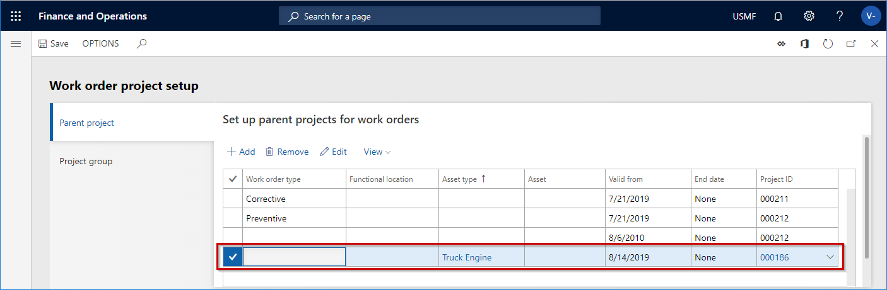
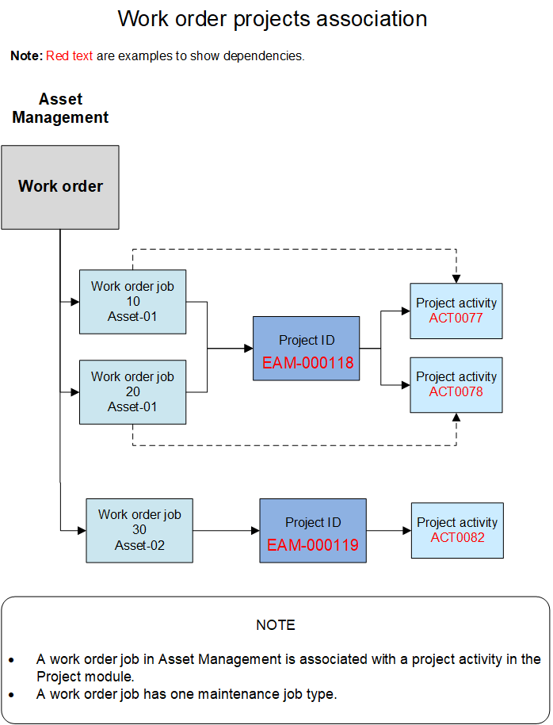
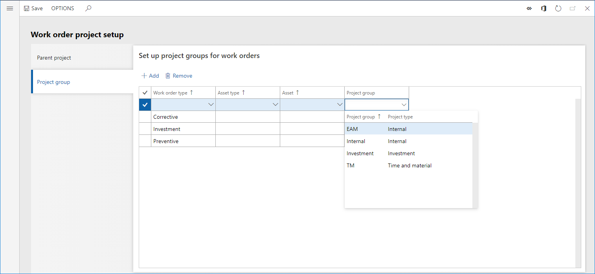
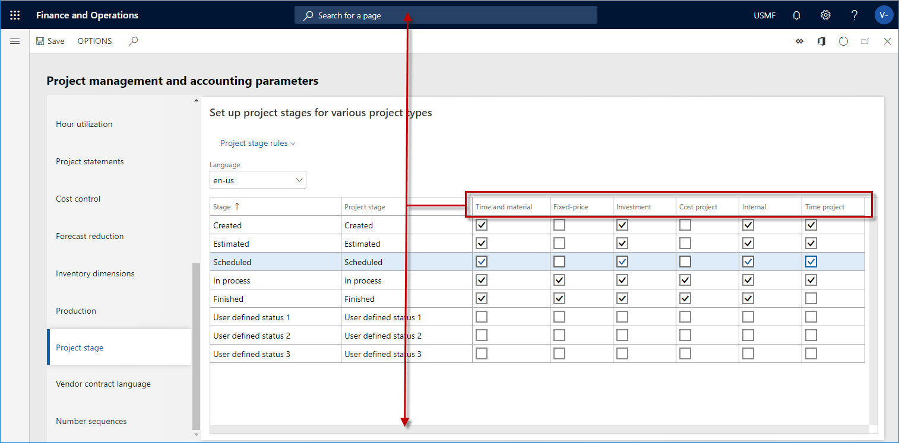
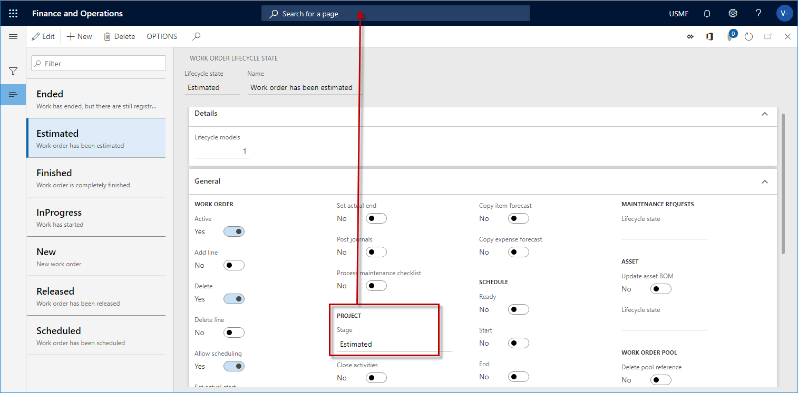

Planungen, Arbeitsaufträge und Projekte
Important
Dynamics 365 for Finance and Operations hat sich zu speziell entwickelten Anwendungen entwickelt, mit denen Sie bestimmte Geschäftsfunktionen verwalten können. Weitere Informationen zu diesen Änderungen finden Sie im Dynamics 365-Lizenzierungshandbuch.
In der Anlagenverwaltung wird die Integration in das Modul Projektverwaltung und Buchhaltung ausgeführt, um die Kostenkontrolle zu optimieren, sodass Benutzer die Kosten für die Wartungsauftragstyp-Planungen und Arbeitsauftragseinzelvorgänge nachverfolgen können.
Für die Nachverfolgung von Wartungsauftragstyp-Planungen sind zwei Einstellungen erforderlich:
Wählen Sie ein Projekt in Asset-Management > Einstellungen > Asset-Management-Parameter und klicken Sie dann auf der Registerkarte Anlagen > auf dem Inforegister Projekt auf das Feld Wartungsanlageprojekt und wählen Sie ein Projekt aus.
Wenn Sie eine Wartungsauftragstyp-Standardposition erstellen, wird automatisch eine Aktivitätsnummer für die Position auf der Seite Wartungsauftragstyp-Standardwerte (Anlagenverwaltung > Einstellungen > Einzelvorgänge > Wartungsauftragstyp-Standardwerte) erstellt.
Wartungstauftragstypen-Planungen dienen zwei Funktionen:
- Sie können die Kosten von Wartungsauftragstypplanungen im Modul Projektverwaltung und Buchhaltung nachverfolgen.
- Planungen werden automatisch einem Arbeitsauftragseinzelvorgangsprojekt übertragen, wenn Sie einen Wartungsauftragstyp für einen Arbeitsauftragseinzelvorgang auswählen.
Um Arbeitsauftragseinzelvorgänge nachzuverfolgen, müssen Sie zunächst Arbeitsauftragsprojekte einrichten. Weitere Informationen finden Sie unter Projekteinrichtung für Arbeitsaufträge.
Einzelvorgangsprojekte für Arbeitsaufträge
Wenn Sie einen Arbeitsauftragseinzelvorgang für einen Arbeitsauftrag erstellen, wird das Arbeitsauftragsprojekt von der Einstellung des übergeordneten Projekts für Arbeitsaufträge auf der Seite Projekteinrichtung für Arbeitsaufträge (Anlagenverwaltung > Einstellungen > Arbeitsaufträge > Projekteinstellungen) bestimmt.
Arbeitsauftragseinzelvorgangsprojekte werden erstellt, indem eine Kombination aus den folgenden Arbeitsauftragsinformationen verwendet wird:
- Der Arbeitsauftragstyp, der für den Arbeitsauftrag ausgewählt wurde
- Der funktionale Standort im Zusammenhang mit der Anlage für den Arbeitsauftragseinzelvorgang
- Der Anlagentyp im Zusammenhang mit der Anlage für den Arbeitsauftragseinzelvorgang
- Die voraussichtlichen Start- und Endzeiten, die für den Arbeitsauftrag festgelegt wurden
Einige dieser Informationen sind auf einem Arbeitsauftrag nicht zu finden. Daher erfolgt die Suche nach einem übergeordneten Arbeitsauftragsprojekt über die verfügbare Kombination von Daten und die Auswahl der Projektkennung, die den Arbeitsauftragsdaten entspricht.
Beispiel: In der folgenden Abbildung ist jeder Arbeitsauftragseinzelvorgang, der mit dem Anlagentyp Lkw-MMotor erstellt wurde, aufgrund der Art und Weise, wie der Lkw-Motor-Anlagentyp eingerichtet wird, ein Unterprojekt der Projektkennung 000186.

Zweck der Projektkennung auf dem Arbeitsauftragseinzelvorgang und die zugeordnete Aktivitätsnummer ist es, Kosten im Zusammenhang mit dem Arbeitsauftragseinzelvorgang und der darin ausgewählten Anlage im Modul Projektverwaltung und Buchhaltung nachzuverfolgen. (Wählen Sie Asset-Management > Gemeinsam > Arbeitsaufträge > Alle Arbeitsaufträge und dann den Arbeitsauftrag aus, um die Projektkennung und die Aktivitätsnummer anzuzeigen. Auf dem Inforegister Positionsdetails wird im Feld Projektkennung die Projektkennung angezeigt, und das Feld Aktivitätsnummer zeigt die Aktivitätsnummer an.) Weitere Informationen zur Kostenkontrolle im Asset-Management finden Sie unter Kosten- und Datumskontrolle Sie unter.
Die folgende Abbildung zeigt eine grafische Übersicht der Arbeitsauftragsprojekte und zugehöriger Projektaktivitäten.

Wenn ein neuer Arbeitsauftragseinzelvorgang für einen Arbeitsauftrag erstellt wird, wird automatisch ein Arbeitsauftragsprojekt für den Einzelvorgang erstellt. Die Finanzdimensionen für die Anlage im Zusammenhang mit dem Arbeitsauftragseinzelvorgang werden automatisch an das Arbeitsauftragsprojekt übertragen.
Die Projektaktivität, die für einen Arbeitsauftragseinzelvorgang erstellt wird, weist die zugehörigen Informationen auf. Dies sind Informationen zum Wartungsauftragstyp, der Wartungsauftragstypvariante und dem Handel. Sie sind z. B. hilfreich, wenn Sie eine Bestellung aus einem Arbeitsauftrag erstellen (siehe Beschaffung) oder das Modul Projektverwaltung und Buchhaltung für die Zeiterfassung verwenden.
Wenn die Anlage für einen funktionalen Standort eingerichtet wurde, aber diese Anlage später für einen anderen funktionalen Standort eingerichtet wird, werden die Finanzdimensionen, die dem neuen funktionalen Standort zugeordnet sind, automatisch für die Anlage aktualisiert. Danach, wenn Sie einen Arbeitsauftragseinzelvorgang für die Anlage erstellen, erhält das Arbeitsauftragsprojekt für den Arbeitsauftragseinzelvorgang automatisch die Finanzdimensionen, die jetzt der Anlage zugeordnet sind. Das bedeutet, dass, wenn Sie funktionale Standorte verwenden, die Kosten für die funktionalen Standorte, für die eine Anlage zu einem beliebigen Zeitpunkt eingerichtet wurde, immer nachverfolgt werden können. Die automatische Aktualisierung der Finanzdimensionen stellt die vollständige Nachverfolgbarkeit der Kosten für das Projekt-Controlling und -Reporting sicher.
Arbeitsauftragsprojekte, Arbeitsauftrags-Lebenszyklusstatus, Projektphasen und Projekttypen
Zur richtigen Verwendung von Arbeitsauftrags-Lebenszyklusstatus und zugehörigen Projektphasen für Arbeitsaufträge beachten Sie die Abhängigkeiten in Beziehung zum Modul Projektverwaltung und Buchhaltung:
- Im Modul Projektverwaltung und Buchhaltung werden die Projektphasen für Projekttypen auf der Seite Projektverwaltungs- und Buchhaltungsparameter eingerichtet.
- Auf der Seite Projektverwaltungs- und Buchhaltungsparameter verwenden Sie die Kontrollkästchen, um entsprechende Projektphasen für alle Projekttypen auszuwählen, die Sie verwenden werden. In den nachfolgenden Abbildungen wurden die fünf Phasen (Erstellt, Vorkalkuliert, Eingeplant, In Bearbeitung und Abgeschlossen) für die Projekttypen Nach Aufwand und Intern ausgewählt. Diese fünf Phasen sind für interne Wartungsaufträge und Dienstwartungsaufträge relevant.
- Im Modul Asset-Management werden Projekttypen durch die Projektgruppen definiert, die Sie auf der Seite Arbeitsauftragsprojekteinstellung > Registerkarte Projektgruppe (Asset-Management > Einrichtung > Arbeitsaufträge > Projekteinstellungen) definieren.
- Die Projektgruppen, die auf der Seite Arbeitsauftrags-Projekteinstellungen eingerichtet werden, werden verwendet, wenn Sie Arbeitsaufträge erstellen. Wenn ein Arbeitsauftrag erstellt wird, wird automatisch ein Arbeitsauftragsprojekt für den Arbeitsauftrag erstellt.
- Jeder Arbeitsauftrags-Lebenszyklusstatus muss eine zugehörige Projektphase haben.
- Die Projektphase, die einem Arbeitsauftrags-Lebenszyklusstatus zugeordnet ist, muss als aktive Phase für die Projektgruppe definiert werden, die im Arbeitsauftragsprojekt definiert wird. Das Arbeitsauftragsprojekt wird automatisch für einen Arbeitsauftrag erstellt.
- Wenn Sie einen neuen Arbeitsauftrag erstellen, basiert die automatische Zuteilung eines Arbeitsauftragsprojekts in den Einstellungen auf der Seite Arbeitsauftrags-Projekteinstellungen.
Die folgenden Abbildungen zeigen die Zuordnungen zwischen Arbeitsauftragsprojektgruppen, zugehörigen Projekttypen, Projektphasen und Arbeitsauftrags-Lebenszyklusstatus.



Weitere Informationen zum Einrichten von Arbeitsauftragsprojekten finden Sie unter Arbeitsauftragsprojekteinrichtung. Weitere Informationen zur Erstellung des Lebenszyklus von Arbeitsaufträgen finden Sie unter Lebenszykluszustand von Arbeitsaufträgen.
Die folgende Abbildung zeigt einen grafischen Überblick der verschiedenen Projekte, die im Modul Asset-Management erstellt werden, um die Integration in das Modul Projektverwaltung und Buchhaltung zu aktivieren. Sie zeigt außerdem die Arbeitsverfahren, denen die Projekte zugeordnet sind.